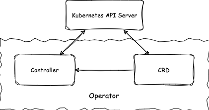
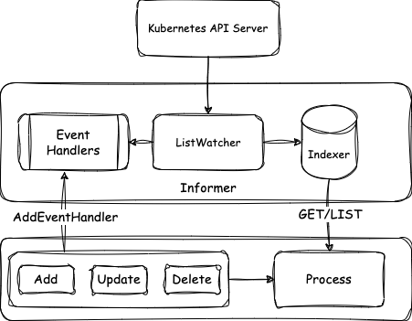

Kubernetes Operator 开发
Kubernetes 是 Google 开源贡献给云原生计算基金会 (CNCF)，用于自动部署、拓展和管理容器化程序的开源系统。Kubernetes 作为云原生的基础设施，已经成为容器化应用编排的事实标准，依赖其优秀的顶层设计和强大的可拓展能力，为整个生态的繁荣奠定了基础。
Kubernetes 内置了一系列的工作负载资源可以直接使用以完成基于容器化运行的特定任务，例如一个数据处理任务或者一个单节点的训练任务可以使用定义 Job 来实现。当内置的工作负载不能满足我们的业务场景需求时，可以通过拓展 Kubernetes 的方式添加功能，例如直接使用 Kubernetes 内置资源无法准确定义一个分布式机器学习任务所需要的角色分配和批量任务等功能。
Operator 是开发 Kubernetes 应用拓展的原生方式，它通过添加自定义资源（CRD）拓展出新的 API，并且依赖 Kubernetes API Server 面向用户提供服务，即用户通过原有服务即可操作新添加的资源对象。为了响应该资源对象的变动，维护资源对象的生命周期，开发者需要定义资源的更新逻辑，即需要开发部署控制器 (Controller) .
如图所示，Operator 包括自定义资源类型（CRD）和控制器（Controller）两个部分，CRD 使得资源定义和 API 得以拓展，Controller 负责对应资源的变化的逻辑处理。
Operator 的应用场景非常广泛，而相比于普通部署于 Kubernetes 集群的应用相比，Operator 的设计模式主要针对能够对资源类进行抽象，通过管理实例化资源的方式完成特定任务。更多应用场景的说明可以在这里 找到。
本文分为三个部分：首先通过 Kubernetes 资源定义和对 Controller 逻辑进行解析介绍 Operator 的工作原理，最后介绍在实践中开发 Operator 的方法。
Kubernetes 资源定义
Kubernetes 的资源管理和调度以 Pod 为单位，一个 Pod 中可以运行一个或多个容器 (Container) ，容器中运行特定的应用程序。Kubernetes 中的资源定义都提供了对外接口，即用户可以通过 Kubernetes API 直接操作 Pod，例如可以使用以下配置信息来描述/定义一个 Pod 实例：
apiVersion: v1
kind: Pod
metadata:
name: nginx
spec:
containers:
- name: nginx
image: nginx:1.14.2
配置信息相当于实例化了一个 Pod 对象，表示一个名称为 nginx 的 Pod，运行镜像为 nginx:1.14.2 ， 而 Pod 类的定义可以在这里找到，
type Pod struct {
metav1.TypeMeta `json:",inline"`
metav1.ObjectMeta `json:"metadata,omitempty" protobuf:"bytes,1,opt,name=metadata"`
Spec PodSpec `json:"spec,omitempty" protobuf:"bytes,2,opt,name=spec"`
Status PodStatus `json:"status,omitempty" protobuf:"bytes,3,opt,name=status"`
}
这里的定义主要有四块内容，其中 apiVersion 和 kind 来自于 TypeMeta 指定类型的名称和版本信息，来自 ObjectMeta 的 metadata 主要指定具体的对象信息，最常见的包含资源名称 name 和资源所在的命名空间 namespace。在 Kubernetes 中，通过类型、命名空间和名称的组合（kind-namespace-name）即可唯一标识一个具体的资源对象。TypeMeta和ObjectMeta信息属于 Kubernetes API 体系的基础定义，类似于继承中的父类定义。而 spec 和 status 会根据资源类型的不同有不同的定义，如这里 Pod 的 spec 和 status 分别由 PodSpec 和 PodStatus 具体定义。一般地，spec表示资源对象的静态配置信息和期望的状态，即该资源通过 spec即可描述它应有的完整工作流程。相对地，status表示该资源对象当前所处的状态信息，在运行时会随时间被更新的部分。
通过调用 Kubernetes 对应的服务接口我们可以在集群中对对象进行 CRUD 操作即创建、查询、更新、删除对应的对象。
定义资源的格式可以有多种，如 yaml，json 等等，取决于调用方法所支持的数据格式。调用 Kubernetes 接口的方式也有多种，如 http(s) 访问、kubectl 客户端访问、使用 SDK 开发 client 等， 本文不对此做详细讨论。
基于 Pod 拓展的资源叫做工作负载资源，Kubernetes 内置了多种工作负载资源。
-
Job 提供单次任务资源定义，Cronjob 提供时间规划运行任务定义；
-
StatefulSet 提供有状态负载集合的定义；
-
Deployment 和 ReplicaSet 提供无状态负载集合的定义；
-
DaemonSet 提供节点绑定的负载定义；
工作负载资源定义都有类似上述 Pod 定义四个部分的结构，基于 Kubernetes 声明式的设计，期望状态在 spec 中被描述， status 中体现当前资源所处的实际状态，那么谁负责更新资源当前所处的状态和怎么做才能满足期望状态呢？这就是接下来讲的组件 controller。
Controller 原理和实现
通过上面资源定义的介绍我们知道 Controller 是进行逻辑处理的部分，它的作用是更新资源状态同时尽可能采取行动使得资源满足期望状态。要理解 Controller 的工作原理需要首先理解 Kubernetes client-go 中的 informer 设计。首先，informer 和特定的资源绑定，如图所示，Informer 通过客户端实现对特定资源的 List 和 Watch 操作，即从服务端拉取所需要的资源信息，获取到的信息一方面存入自带索引的本地缓存 cache indexer，另一方面变动信息生成对应事件 event，预先注册的对应资源变动的 handler 相应逻辑会被触发执行。这里 event 信息中只有索引信息，在处理模块中需要使用资源完整信息时再通过 indexer 进行查询。
从以上设计中可以看出，本地缓存所需资源信息，极大减少了和 API Server 交互的压力，而且在具体实现中，采用了 shared informer 的机制，即同一资源被多次使用时可以共享 informer 再次降低了负载压力。
我们以 Job Controller 为例（完整源码可以在这里找到），来看 Controller 如何利用 informer 完成控制逻辑的。Controller 定义主要包含以下部分（已省略部分内容），在 Job Controller 中关注两种资源 Job 和 Pod。
type Controller struct {
// 用于连接集群的客户端
kubeClient clientset.Interface
// 用于获取 job 信息
jobLister batchv1listers.JobLister
// 用于获取 pod 信息
podStore corelisters.PodLister
// 需要处理的消息任务队列
queue workqueue.RateLimitingInterface
}
当 Controller 被初始化时，两种资源 Job 和 Pod对应的 informer 已经提前被创建作为参数传入，这里主要将 Controller 中对应的函数和资源变动事件通过 AddEventHandler 函数进行注册绑定，这样对应资源变动时，函数将会被执行，可以看到当 job 被创建和删除时，只是简单将对象放入处理队列，而 job 更新和 pod 变动都有对应函数处理，pod 的变动触发函数主要处理一致性问题和触发 job 更新消息，下面我们主要关注 job 更新消息的处理。
func NewController(podInformer coreinformers.PodInformer, jobInformer batchinformers.JobInformer, kubeClient clientset.Interface) *Controller {
// 初始化，创建消息队列
jm := &Controller{
kubeClient: kubeClient,
queue: workqueue.NewNamedRateLimitingQueue(...),
}
// 向 job informer 注册处理 job 资源变更消息的 handler 函数
jobInformer.Informer().AddEventHandler(cache.ResourceEventHandlerFuncs{
AddFunc: func(obj interface{}) {
jm.enqueueController(obj, true)
},
UpdateFunc: jm.updateJob,
DeleteFunc: func(obj interface{}) {
jm.enqueueController(obj, true)
},
})
jm.jobLister = jobInformer.Lister()
// 向 pod informer 注册处理 pod 资源变更消息的 handler 函数
podInformer.Informer().AddEventHandler(cache.ResourceEventHandlerFuncs{
AddFunc: jm.addPod,
UpdateFunc: jm.updatePod,
DeleteFunc: jm.deletePod,
})
jm.podStore = podInformer.Lister()
return jm
}
当 Controller 运行时，可以同时运行多个 worker 并发处理任务
func (jm *Controller) Run(workers int, stopCh <-chan struct{}) {
...
for i := 0; i < workers; i++ {
go wait.Until(jm.worker, time.Second, stopCh)
}
...
}
每个 worker 不断地从消息队列中取出需要处理即有变更发生的资源，执行同步函数
func (jm *Controller) worker() {
for jm.processNextWorkItem() {
}
}
func (jm *Controller) processNextWorkItem() bool {
key, quit := jm.queue.Get()
...
// syncHandler 即 jm.syncJob
forget, err := jm.syncHandler(key.(string))
...
}
同步 job 的具体流程如下，先通过消息中的索引信息获取对象，这里再次注意获取资源三要素：资源类型、命名空间和名字，job 是用来管理 pod 的（几乎所有的工作负载都是这样设计），底层资源还是 pod，所以这里还要获取与 job 关联的 pods。获得资源的状态信息后，经过一系列判断以对 job 进行不同的操作，比如失败且满足条件时会执行删除关联 pod 操作，有的还需进一步判断，比如在 manageJob 包含了对不同情形下需要执行删除和创建 pod，注意到，最后操作都会落到对 pod 的管理上，这也是 job 资源的意义。同步完成后，更新 job 的最新状态。
注意这里获取资源对象都是从 informer，也即本地缓存中获取的。
func (jm *Controller) syncJob(key string) (bool, error) {
// 获取资源
ns, name, err := cache.SplitMetaNamespaceKey(key)
//
sharedJob, err := jm.jobLister.Jobs(ns).Get(name)
// 通过 job 获取关联 pods
pods, err := jm.getPodsForJob(&job)
if jobFailed {
// 如果 job 失败，删除 pods
jm.deleteJobPods(&job, activePods, errCh)
} else {
// 进一步分析以确定操作
if ...
jm.manageJob(activePods, succeeded, &job)
...
}
// 计算、修改 job status
...
// 即 updateJobStatus 更新 job status 信息
jm.updateHandler(&job)
}
在 manageJob 包含了对 job spec 中任务运行数量控制的核心逻辑，可以看出，当一个常规 job 被创建时，它会进入这里的创建 pod 分支以启动工作流程。
func (jm *Controller) manageJob(activePods []*v1.Pod, succeeded int32, job *batch.Job) (int32, error) {
parallelism := *job.Spec.Parallelism
if active > parallelism {
...
// 删除 pod
jm.podControl.DeletePod(job.Namespace, activePods[ix].Name, job)
} else if active < parallelism {
...
// 创建 pod，同时关联 pod 和 job
jm.podControl.CreatePodsWithControllerRef(job.Namespace, &job.Spec.Template, job, metav1.NewControllerRef(job, controllerKind)) }
}
}
关于对 pod 的控制逻辑都已完毕，我们最后来看 Controller 一个重要的任务是将资源当前的状态更新至 status 字段下，这里的逻辑比较简单，只需要将获取和计算好的当前状态更新到服务端，值得注意的是并不会也不能直接改动从 informer 中获取的对象（再次强调它是本地缓存），而是通过客户端（这里的 jobClient）直接向 API Server 提交请求更新状态。
func (jm *Controller) updateJobStatus(job *batch.Job) error {
jobClient := jm.kubeClient.BatchV1().Jobs(job.Namespace)
newJob, err = jobClient.Get(context.TODO(), job.Name, metav1.GetOptions{})
newJob.Status = job.Status
jobClient.UpdateStatus(context.TODO(), newJob, metav1.UpdateOptions{}); err == nil {
}
在上述介绍中，限于篇幅省略了对 expectations 的讨论，它是一个缓存工具用于保证同步过程中的数据一致性问题。因为在缓存场景下，运行时从缓存中获取的信息可能和服务端存在不一致的情况，在实现时需要考虑。
通过以 Job Controller 为例，我们介绍了 Controller 的原理和工作流程，简单地可以将 Controller 的工作原理总结为以下循环和图示。
for {
desired := getDesiredState() // spec
current := getCurrentState() // status
makeChanges(desired, current)
}
Operator 开发实践
当 Kubernetes 提供的工作负载无法满足需求场景时，我们可以考虑通过添加自定义资源和自定义控制器的方式来扩展 Kubernetes 功能，这里包含两层意思：
-
通过自定义资源 （ CustomResourceDefinition 简称 CRD）来拓展 Kubernetes API
-
通过部署对应的自定义 Controller 执行自定义资源的定制化逻辑
这种原生的拓展方式即 CRD 和 Controller 联合开发部署的方式被称为开发 Kubernetes 的 Operator.
开发自定义 Operator 时，可以使用一些开发工具来帮助我们自动构建开发 Operator 所需要的基础组件，比如 kubebuilder 是一个带有命令行工具和运行时库的构建工具，通过它可以快速构建一个生产部署 ready 的自定义 Operator，包括生成 RBAC 、yaml 配置等等。
下面以 CronJob 的 Operator 为例来介绍使用自定义 Operator 开发的流程和方法。
首先是通过 Golang struct 定义 CRD，前面介绍过，只需要关心 spec 和 status即可，
type CronJob struct {
metav1.TypeMeta `json:",inline"`
metav1.ObjectMeta `json:"metadata,omitempty"`
Spec CronJobSpec `json:"spec,omitempty"`
Status CronJobStatus `json:"status,omitempty"`
}
根据具体的设计需要在 spec 中添加字段，可以一般也必然地会使用 kubernetes 内置的资源，这里 CronJob 中定义了 job，使用 job 资源类型来管理工作负载。
type CronJobSpec struct {
Schedule string `json:"schedule"`
JobTemplate batchv1beta1.JobTemplateSpec `json:"jobTemplate"`
...
}
Controller 对应这里的 CronJobReconciler，它的逻辑被封装为接口函数 Reconcile，这个函数会在资源发生变动时被触发，所以只需在函数内部专注编写同步状态逻辑即可。而且 Reconciler 还提供了高层 API 如 get/list/create 等操作，这些 API 来自于 controller-runtime 库中的 client，当有更灵活的调用需求时可以直接使用该库中的 API 进行资源操作而不必受限于这里封装的 Reconcile 函数。
func (r *CronJobReconciler) Reconcile(ctx context.Context, req ctrl.Request) (ctrl.Result, error) {
// 获取对象，再次注意三要素
var cronJob batch.CronJob
if err := r.Get(ctx, req.NamespacedName, &cronJob); err != nil {
return ctrl.Result{}, client.IgnoreNotFound(err)
}
var childJobs kbatch.JobList
r.List(ctx, &childJobs, client.InNamespace(req.Namespace), client.MatchingFields{jobOwnerKey: req.Name}); err != nil {
// 计算当前的状态，给 cronJob.Status 负值
cronJob.Status = getStatus()
// 更新状态
if err := r.Status().Update(ctx, &cronJob); err != nil {
// 更新不成功时，返回错误，将任务放入队列重新执行
return ctrl.Result{}, err
}
// 创建 job 实例
job, err := constructJobForCronJob(&cronJob, missedRun)
if err != nil {
return scheduledResult, nil
}
// 向服务端请求创建 job
if err := r.Create(ctx, job); err != nil {
return ctrl.Result{}, err
}
return scheduledResult, nil
}
同样值得关注的是 Controlller 被创建的部分，原 informer 中的索引和缓存逻辑被封装到了这里，根据拓展资源的定义在这里添加资源依赖关系和创建索引，除了工作负载如果需要用到其他 Kubernetes 资源也需要在这里进行添加，如 Service 和 Configmap 等，当使用非 Kubernetes 内置资源时，会形成必要的强依赖。
func (r *CronJobReconciler) SetupWithManager(mgr ctrl.Manager) error {
// 创建本地缓存和索引
mgr.GetFieldIndexer().IndexField(context.Background(), &kbatch.Job{}, jobOwnerKey, func(rawObj client.Object) []string {}
// 构建资源依赖关系
return ctrl.NewControllerManagedBy(mgr).
For(&batch.CronJob{}).
Owns(&kbatch.Job{}).
Complete(r)
}
到这里使用 Operator 开发模式进行 Kubernetes 扩展的主要内容就介绍完了，更多的开发细节请参考 Kubernetes 和 kuberbuilder 的文档。
基于 kuberbuilder 开发的用于运行 paddlepaddle 分布式任务的 paddle-Operator 已经开源，感兴趣的朋友可以在这里找到源码，相互学习交流。
Reference
https://kubernetes.io/zh/docs/concepts/workloads/
https://kubernetes.io/zh/docs/concepts/extend-kubernetes/api-extension/custom-resources/
https://github.com/kubernetes-sigs/kubebuilder
https://github.com/kubernetes/api
https://github.com/cncf/tag-app-delivery/blob/main/operator-wg/whitepaper/Operator-WhitePaper_v1-0.md